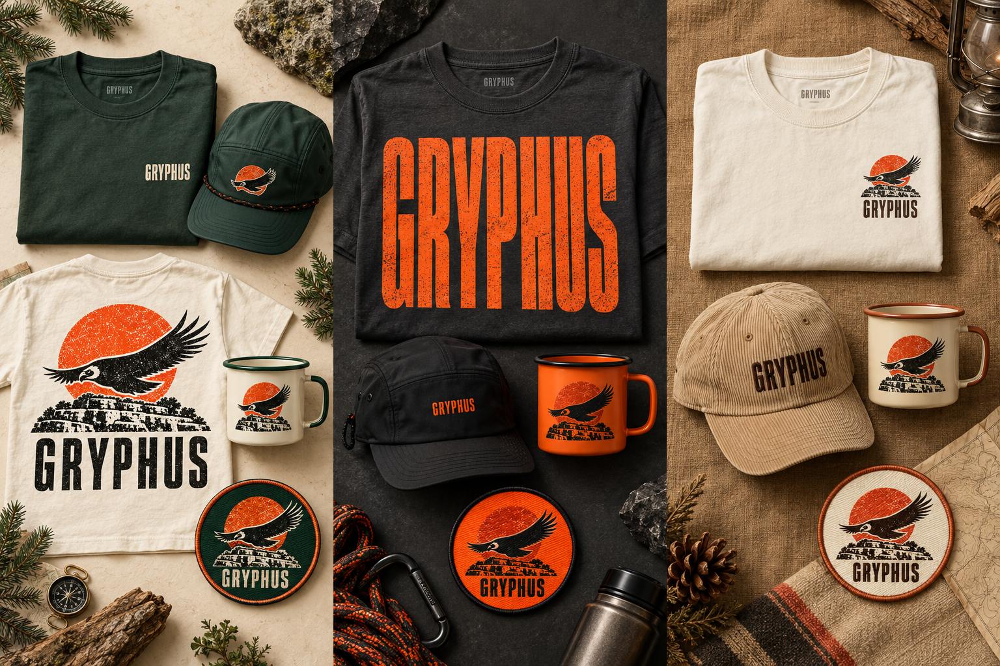

CALE + WALT / YOUR WORLD, BROUGHT TO LIFE.
THREE WAYS
TO TAKE FLIGHT.
Choose a direction. Play with the full site.
Tell us what feels like Gryphus.
Open the experiences. Hear the mood. Build your weekend.
Choose Field Guide ↓THREE COLLECTIONS. MADE TO KEEP.
TAKE THE
WEEKEND HOME.
Pick a collection, or mix your favorites.
These are design visions for Cale’s review.

Concept mockups, not items for sale. Product specifications and artwork need a supplier proof before production.
MAKE IT YOURS.
WHAT FEELS
LIKE GRYPHUS?
Keep a whole direction or mix the parts you love.
Your selection and notes become one simple reply.
FROM THE FIRST IDEA TO THE REAL WORLD.
A WHOLE WORLD.
ONE CLEAR IDENTITY.
Corrected lettering. Every experience. A cleaner, usable visual system.
Explore the board ↗02 / READY FOR YOUR COLLABORATORSThe designer’s guideIdentity, color, type, photography, partner use, signage and merchandise.
Open the style guide ↗What is established, and what is still being explored? +
Dates: April 30–May 2, 2027. Place: Flat Rock Ranch, Comfort, Texas. Walt curates the music; Cale is executive producer. The experiences visualize Cale’s 2027 creative direction. Lineup, tickets, race entries, camping arrangements, partner commitments and operational policies still need event-specific confirmation.
Generated campaign art is labeled as concept imagery. Gordon and Cale’s April 2026 photograph is a real memory. No sponsor affiliation is asserted. The original bird-and-sun concept stays central; the founder story behind the name is a useful next conversation.